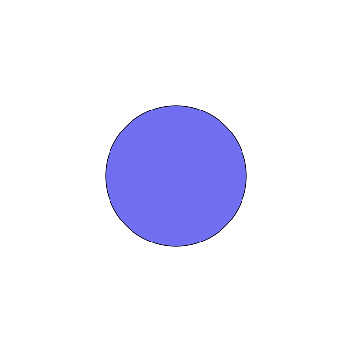

Document Builder Guide
The doc_builder module compiles Markdown documents containing drawlib code blocks into fully rendered HTML static sites, PDFs, or GitHub-ready Markdown.
1. Using Python API (build)
Import build directly from drawlib.doc_builder:
from drawlib.doc_builder import build
# Build GitHub Markdown documentation with embedded images
build(
input_path="docs_src",
output_path="docs",
output_format="markdown"
)
# Build Web HTML documentation with built-in CSS preset
build(
input_path="docs_src",
output_path="docs_html",
output_format="html",
css_path="default" # Presets: "default", "github", "monochrome", "minimal"
)
2. Using Command-Line Interface (CLI)
Drawlib provides a CLI tool accessible via drawlib doc-builder compile:
# Compile input directory to HTML site with "github" CSS preset
drawlib doc-builder compile docs_src -o docs_html --format html --css github
# Compile single file to PDF
drawlib doc-builder compile docs_src/index.md -o docs_html/index.pdf --format pdf
3. Built-in CSS Presets
When compiling HTML output, select from 4 built-in CSS presets:
default: Drawlib signature Indigo/Violet modern design.github: GitHub Markdown clean light theme.monochrome: Slate/Zinc dark minimalist theme.minimal: Print-inspired editorial typography.
4. Code Block Options
Customize image size, alignment, captions, or output format directly on the code block header line using space-separated parameters:
<!-- Shorthand syntax for 400px width and center alignment -->
```python
circle((50, 50), radius=20)
circle((50, 50), radius=20)

### Available Parameters
- **`width:` / `w:`** or numeric shorthand (`400px`, `50%`) - Image width.
- **`height:` / `h:`** (`300px`) - Image height.
- **`align:` / `a:`** or shorthand (`left`, `center`, `right`) - Container alignment.
- **`format:` / `fmt:`** or shorthand (`png`, `svg`, `inline_svg`) - Per-block output format override.
- **`caption:`** (`caption:"Description"`) - Renders a `<figure>` with `<figcaption>`.
- **`class:`** (`class:custom-class`) - Custom CSS class on the container element.
---
## Navigation
- [Back to Index](./index.md)